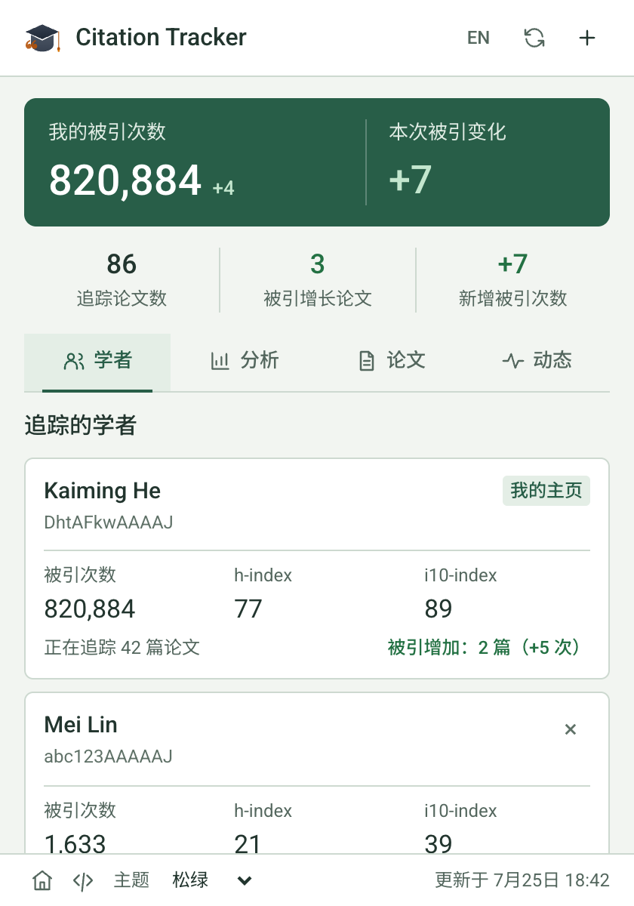

01
添加 Scholar 主页
输入用户 ID，同时追踪自己与关注的研究者。
02
建立论文初始记录
首次同步保存论文与被引次数，供后续刷新比较。
03
查看被引增长
增加了多少次、对应哪篇论文、何时发现，都在动态列表中。
追踪被引变化，了解学术影响
自动追踪 Google Scholar 论文的被引次数，查看年度趋势，以及每次更新中哪些论文的被引次数增加。
免费、开源 · 数据仅保存在你的浏览器中

真实界面 · 示例数据
每 30 分钟自动更新被引数据，无需手动查看。
展示 Scholar 公开的历年被引次数；当前年份单独标注，同比只比较连续的完整年度。
查看被引次数、h-index、i10-index、被引论文占比和增长势头，并展开指标说明。
查看哪些论文的被引次数增加，以及每篇论文增加了多少次。
同时追踪自己和关注的研究者，在一个弹窗中查看数据。
浏览已保存的论文和被引次数，按学者或关键词筛选，也可打开 Scholar 在线搜索。
界面跟随浏览器语言，也可手动切换。论文标题、作者和通用指标保留原文。
在弹窗底部切换主题，跟随系统深浅色。语言和主题选择都会自动保存。
不必反复打开 Scholar，也不用自己记录数字。Citation Tracker 会整理每次更新中的被引增长记录。
输入用户 ID，同时追踪自己与关注的研究者。
首次同步保存论文与被引次数，供后续刷新比较。
增加了多少次、对应哪篇论文、何时发现，都在动态列表中。
无需账号、没有分析脚本、没有云端数据库。主页 ID、论文快照与引用历史全部保存在 Chrome 本地存储中。
添加 Scholar 主页后，即可开始自动追踪被引变化。
从 Scholar 主页 URL 中获取你的 ID：
scholar.google.com/citations?user=DhtAFkwAAAAJ&hl=en
v1.5.0 安装包可用于开发者模式安装。Chrome 应用商店当前为 v1.4.0，新版需另行提交商店审核。
chrome://extensionsmanifest.json 的目录已有开发者模式安装：替换扩展目录中的文件，然后在 chrome://extensions 点击重新加载。学者数据和偏好会保留。
新增年度被引趋势与影响力雷达图。
不会。扩展仅请求公开的 Google Scholar 被引数据，不读取账号信息、邮件或浏览历史。
第一次刷新用于保存论文初始记录。从第二次成功刷新开始，扩展才会比较并记录被引增长。
可以。你可以添加多个 Scholar 用户 ID，并按学者筛选论文与被引动态。
当前版本专注于本地追踪和浏览，暂未提供导出功能。你可以在 GitHub 提交功能建议。
点击弹窗顶部的「中文 / EN」切换语言，在底部的主题菜单选择「松绿」或「石墨」。选择会自动保存。
安装 Citation Tracker，把重复检查交给浏览器。
安装 Chrome 扩展